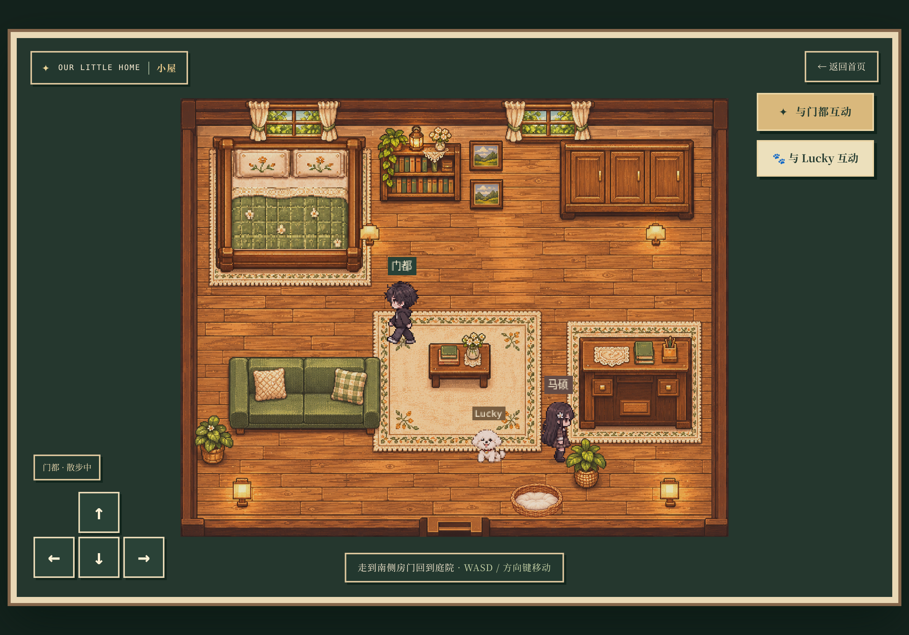
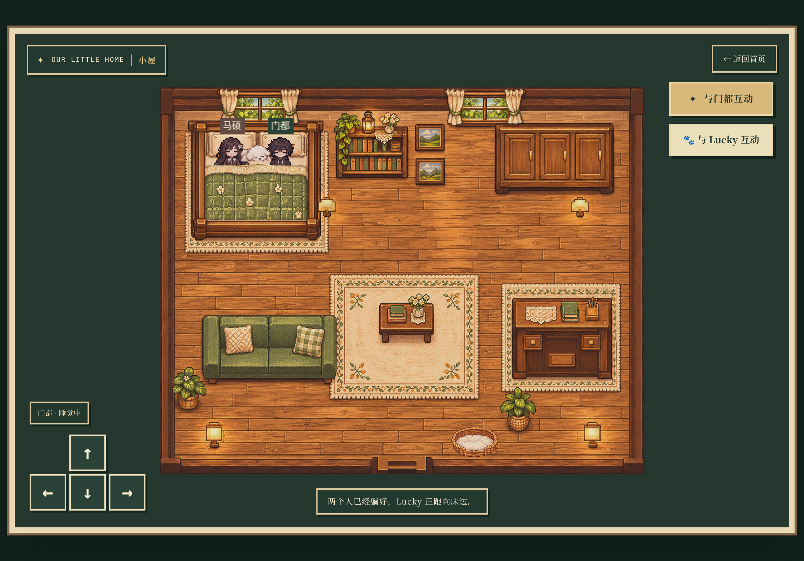

OUR LITTLE HOME / PRIVATE PLAYTEST
Lucky 的一天，
还有我们三个的好梦。
新版动作已接入真实 Phaser 小屋。这里展示实际游戏录像、关键阶段截图和同一套透明图集，进入游戏后可以亲自操作。
仅限本人登录访问的验收站。main、GitHub Pages 正式网站和旧公开预览未更新。
实际游戏连续演示
从抚摸、抱起、四方向行走、放下与取球，到回窝睡觉、跳上床、钻被窝和一起起床。录像来自真实游戏，包含寻路和阶段间的连续运动。
01 · 与 Lucky 互动打开右侧宠物菜单。马硕和门都都可以抚摸、抱起 Lucky；抱持时方向键可以走路、转向。
02 · 我们三个一起睡觉点双人床或「与门都互动」。两人先入床；Lucky 会从真实位置出发，若在窝里睡觉则先醒来。
03 · 一起起床 / 取消菜单选择「三个一起起床」，Lucky 先出被窝和跳下床。方向键可以结束受控互动；中途取消会恢复控制与碰撞。
实机关键画面
Retina 与横屏检查




以上为 Chromium 的触控与 Retina 模拟。请在真实 iPad Safari 横屏检查手指长按、菜单遮挡、改变尺寸、连续互动和设备帧率；目前没有真实 Safari 通过记录。
游戏使用的动作图集
四向用于行走、奔跑、托抱与摸头反应。狗窝、跳跃、钻被窝和躺卧为固定场景机位的专用动作。
马硕与门都 · 弯腰、伸手、抱持
马硕 · 身体
马硕 · 前景手掌
门都 · 身体
门都 · 前景手掌
| 资源 | 尺寸 / 帧数 | 新增内容 |
|---|---|---|
| Lucky 协同动作 | 320×280 / 56帧，40×40 | 托抱、咬球、摸头、睡眠、跳跃、钻被窝 |
| 马硕 / 门都 | 各320×240 / 32帧，40×60 | 专用弯腰、触摸与四向抱持步态 |
| 前景手掌 | 各320×240 / 32帧 | 同步手臂遮挡，狗在身体前、手掌后 |
| 狗窝 / 局部被子 | 138×90分层 / 32×62网格 | 沿用原床和狗窝外观，分离局部遮挡 |